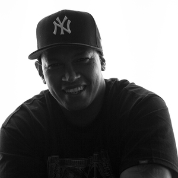
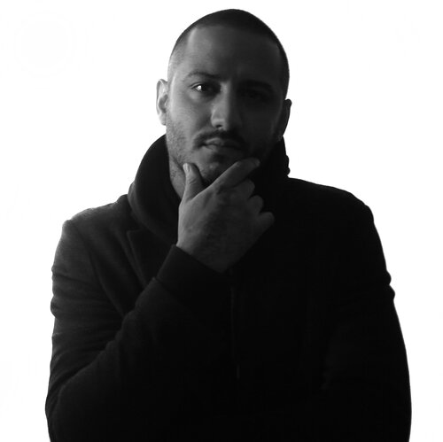
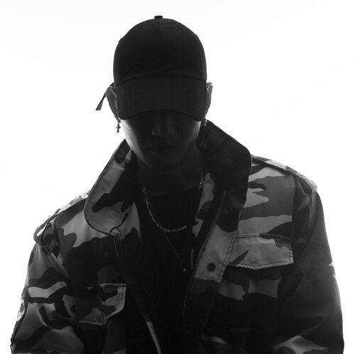
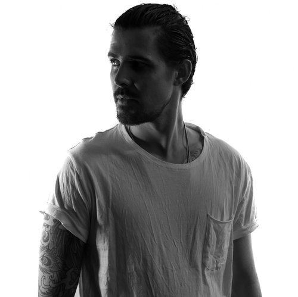
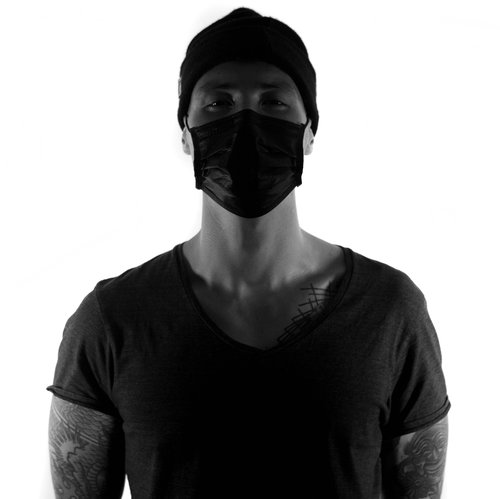
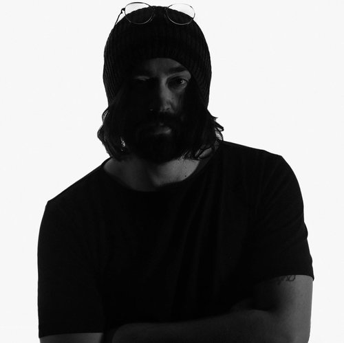

Owner/operator Keith “Bang Bang” McCurdy has tattooed Rihanna in the
tropics, Lebron James in his basement, Cara Delevingne on a roof, Katy
Perry in Stockholm’s Abba Museum, and Justin Bieber on a plane at
30,000 feet. Stay tuned and check Instagram for an availability
announcement!
Liz
Specializes in illustrative fine art in color & black and gray. Liz
has a great grasp of feminine style and design along with a completely
unique take on tattooing. She is sought after and known for her laser
like precision.

Rob
Specializes in illustrative color, fine line and graphic new school.
Rob met Bang Bang while they traded off window shifts at another shop.
They only put the best artists in the window, so when Bang Bang opened
his own place, Rob was one of the first hires.

Dez
Specializes in black and gray realism. The pride he takes in his work
is evident as he continues to build his portfolio with unique and
original designs. Dez says, "Having the opportunity to work with the
best artists in the world inspires me daily. Words cannot describe how
amazing it is to be a part of such a fantastic group."

Mr. K
Specializes in micro style and single needle. Originally from Seoul,
Korea K began his art career as a graphic designer. "Growing up I was
always looking for the finest pen I could use for my art projects.
When I began my career in the tattoo industry, naturally I was drawn
to the intricate details of the micro style."

Maks
Specializes in black and gray realism. Max says,"Tattooing is the only
medium where I'm not only able to identify myself as an artist, but it
also allows me to create a unique connection with individuals who
trust me with their skin. I'm thrilled to be a part of something that
a client will cherish for a lifetime."

Kevin
Specializes in minimalism and blackwork. Kevin says, "Being surrounded
by such amazing artists motivates me to excel and expand my range of
styles. I'm always pushing my own boundaries and limits."

Okan
Specializes in fine line and minimalism, abstract & geometric art.
Okan is originally from Istanbul. Some would describe his works as
minimalist, or geometric. Whilst most of his tattoos often contain all
those elements, his designs are something we cannot categorize in one
or two standard tattoo styles.
Georgia
Specializes in watercolor & American Traditional. Georgia says, ”Since
I could pick up a pencil I have been drawing on everything. My
Barbies, shoes, walls, and friends would wear my art for fun, but when
I finally got my first tattoo I knew this was something I wanted to
pursue.”